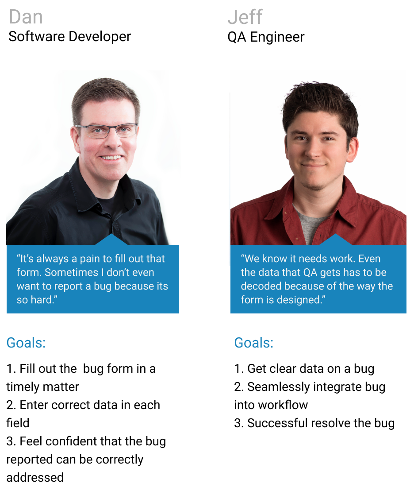
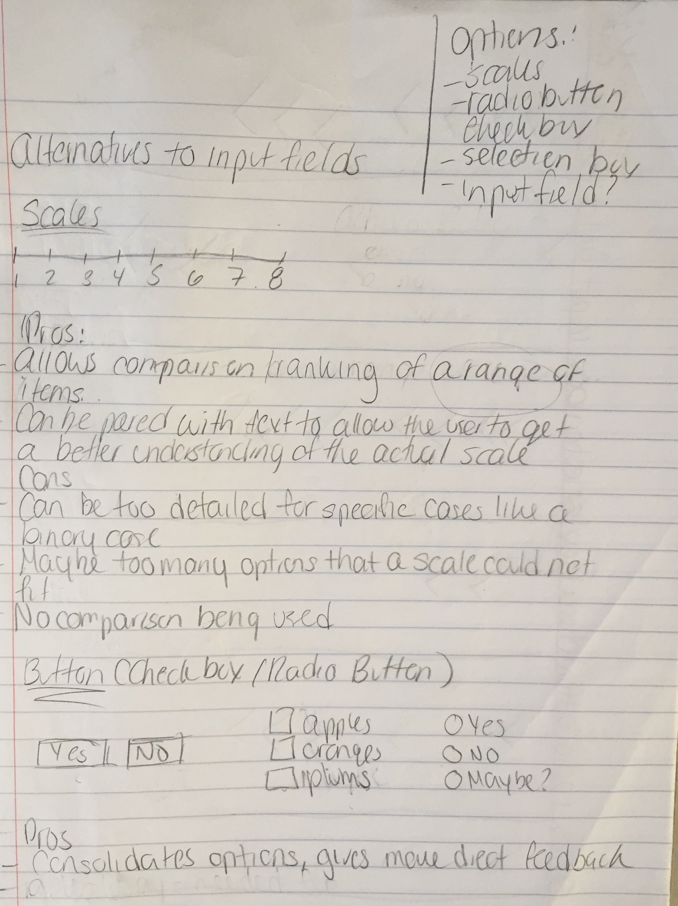
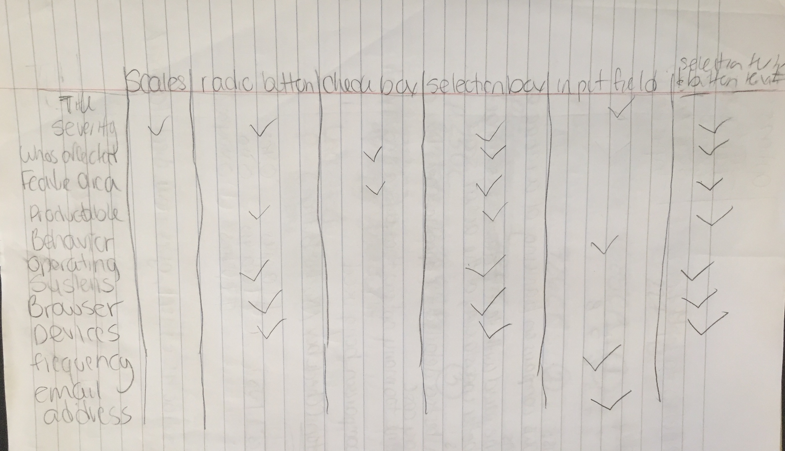
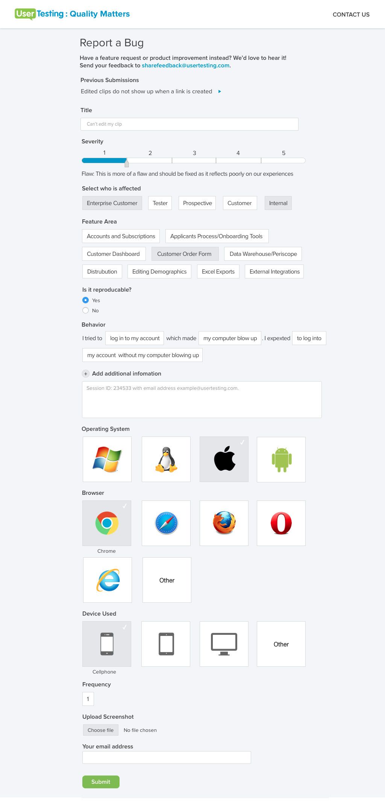

Background
The User Testing Bug form is used as an internal tool for developers to report bugs to Quality Assurance (QA) engineers. The form's wordage and overall design was inconsistent which confused many users, ultimately resulting in QA engineers receiving incomplete or misinformation from the form. I redesigned the form to decrease user pain and user error when submitting and reduce inconsistencies in the data the QA team received.
Methodology
I began by using the form myself to understand its core functionality and the user experience. There were initial red flags for me that I could predict many users felt as well. After getting a feel for the form, I spoke with the QA team about its current state.
My questions were geared towards understanding:
1. It took a lot of time to fill out the form because of the amount of textual information that was required to submit.
2. The instructions for some of the input field were not clear which made the user confused or unsure about what information the form was truly asking for.
3. The overall design of the form did not match the brand identity of the company
It was interesting to see that problems on the QA side and the users side matched up seamlessly. This explained why there was so much inconsistency on both ends. Because every field was an input field, there was a free range of data that the users could enter. It was clear that I needed to find another approach to the input field and make the instructions for each input clear and concise.
Through conducting these user interviews, the objectives of the form became clear.
Objectives
1. Reduce time it takes customers to fill in form
2. Clarify instructions for each input
3. Get concise data that is more useful to QA
Ideation
From the conversations I had with the QA team and the target users, I created to two user personas that shined very clearly in the interviews.
Focusing on accomplishing these user goals, I worked on alternatives to the input field that were able to give the same level of preciseness (If not better) in the data. I listed out each input variation that I could think of, relevant to the form. I analyzed each input's advantages and disadvantages and created a grid to determine the effectiveness of using a specific input type for a given piece of information. This exercise aimed to reduce the inconsistencies in the data by giving each input more structure.
 Design
I took to pen and paper and began making various sketches of these ideas. I referred back to the list of above to ensure that each input type was relevant to that specific piece of data. I started off very board and worked to condense my ideas into the strongest sketches.
While there were multiple types of inputs I could use for each piece of data, I chose to incorporate visuals such as common icons to limit the user's textual input. In addition, I used "fill in the blank" sentence structures that were natural to the user when describing a bug. This also restricted the amount of typing the user had to do, which ultimately limited the amount of error the QA team would receive. After iterating on these concepts, I met with the QA team to make sure that the direction I was going in aligned with their goals
This was the final product:
Results
While initially well received by the QA team and target users, this form was not implemented. Another direction was sought after to solve this problem. At this point my internship had come to an end and I was not able to validate the form's success at accomplishing the original goals.
Conclusion
>I recieved a deeper understanding of the QA workflow, bug processing, and pushed myself to think of creative solutions that expanded on the traditional form and saves the user time by limiting the amount textual input . I'm certain that in the future I'll be able to use these input field alternatives for another project.
Acknowledgements
A special thanks to Emily, James, and Jurvis for their support while designing the form. I'm glad to have been a part of this.